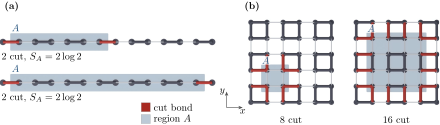
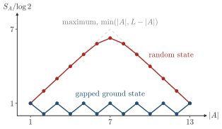
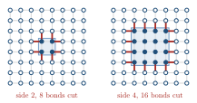

Advanced Quantum Materials 2027 · All lectures · Lecture notes
Session 7. Quantum Many-Body Entanglement and Tensor Networks
7.7 Two dimensions and the area law
What changes when the decoupled clusters sit on a two-dimensional lattice? We will now see that the boundary of a region becomes a line that grows with the region. So the entanglement entropy of a gapped ground state grows with the boundary and not with the volume, which is the area law (7.9).
\[|\Psi\rangle = |\text{singlet}\rangle_{01} \otimes |\text{singlet}\rangle_{23} \otimes |\text{singlet}\rangle_{45} \otimes \cdots. \tag{7.8}\]
This is the ground state of the decoupled dimers of Section 7.6, a product of singlets on the pairs of sites \((0,1)\), \((2,3)\) and so on. A block of consecutive sites that cuts \(n_\text{cut}\) of these singlets has the entanglement entropy \(S=n_\text{cut}\log 2\), at most \(2\log 2\) for a block of any length.
Let us now do the same construction in one more dimension. We take a two-dimensional lattice and we group the sites into separate clusters of four sites, called tetramers, instead of pairs. The sites inside a cluster are coupled, but different clusters are not coupled, so the ground state is again an exact tensor product, now of tetramer ground states instead of dimer singlets. The same factorization argument applies. A cluster fully inside \(A\) or fully inside \(B\) gives nothing, and only the clusters that cross the boundary between the two parts contribute to \(S\).
The only difference is geometric. Let us compare a small region \(A\), whose boundary cuts eight bonds, with a much larger region \(A'\), whose longer boundary cuts many more bonds. Since the entropy again gets one contribution from each cut cluster, at most \(\log 2\) per cut bond, \(S\) is now set by the length of the boundary. In two dimensions this length grows when the subsystem grows. This is different from the 1D case of Section 7.6, where the boundary was always two points for any size of the subsystem.
This is the central contrast. In one dimension the entanglement entropy of a gapped ground state saturates, and it does not depend on the size of the subsystem. In two or more dimensions it grows with the size of the boundary, \(S_A \sim L_A \sim \partial A\) and \(S_{A'} \sim L_{A'} \sim \partial A'\), so \(S_{A'} > S_A\) for the larger region. Figure 7.2 shows the two cases next to each other, with the cut bonds marked, so that we can count them by eye in each case.

This behavior is called the area law. The boundary between a subsystem and the rest of the system is a fixed number of points in 1D, a length in 2D and an area in 3D. For the ground state of a gapped and local Hamiltonian, the entanglement entropy of a subsystem scales with the size of this boundary, and not with the volume of \(A\).
For the ground state of a gapped and local Hamiltonian, the entanglement entropy of a region \(A\) grows with the size \(|\partial A|\) of its boundary,
\[S_A \;\sim\; \alpha\, |\partial A|, \tag{7.9}\]
and not with the volume of \(A\). This is the area law. A random state of the Hilbert space does not follow it, since its entropy grows with the volume. In its strict form the area law says that \(S_A\) is at most a constant times \(|\partial A|\), and \(\alpha\) depends on the model and on how the boundary runs on the lattice.
The steps Counting the cut singlets of a square region
We take a square lattice covered by horizontal dimers, with a singlet on the sites \((2m,y)\) and \((2m+1,y)\) for every integer \(m\) and every row \(y\). This is the product of singlets (7.8) on every row, and the reduced state factorizes in the same way, so again \(S_A=n_\text{cut}\log 2\).
The region \(A\) is a square of side \(\ell\), with \(\ell\) even, that covers the columns 1 to \(\ell\). On its left side the site \((1,y)\) is paired with \((0,y)\), which is outside, so each of the \(\ell\) rows has one cut singlet there. On its right side the site \((\ell,y)\) is paired with \((\ell+1,y)\), which is outside too, and this gives \(\ell\) more. The dimers inside are not cut, and the top and the bottom of the square cut no dimer, since the dimers are horizontal. So
\[S_A=2\ell\log 2, \qquad |\partial A|=4\ell, \qquad |A|=\ell^2.\]
When we double \(\ell\), the entropy doubles together with the boundary, while the volume grows four times. For this region only half of the cut bonds carry a singlet, so \(\alpha=\tfrac12\log 2\). The same square moved to the columns 0 to \(\ell-1\) cuts no dimer and has \(\alpha=0\). So in a lattice state \(\alpha\) depends on the orientation and on the position of the boundary.
This is a strong restriction. A random state taken uniformly from the full Hilbert space of dimension \(2^L\) would usually have \(S_A\) close to its maximum value. This maximum is \(|A|\log 2\) for a spin-1/2 subsystem of size \(|A|\), and this behavior is called a volume law. In this sense, gapped ground states are very far from typical states. They live only in the very small part of the Hilbert space that satisfies the area law. The ground states of the dimer and tetramer models above are in this part without any approximation, and the ones of realistic gapped Hamiltonians are approximately in it.

SrCu\(_2\)(\(^{11}\)BO\(_3\))\(_2\) is a two-dimensional magnet of the Shastry-Sutherland kind, which the article describes with an exact dimer ground state. Inelastic neutron scattering at \(1.7\) K finds three levels, at around 3, 5 and 9 meV. The lowest excitation, at \(3.0\) meV, is almost without dispersion, with a bandwidth of \(0.2\) meV at most. The measurement is in this article. Our own reading is that a product of singlets on a 2D lattice has the entropy \(\log 2\) times the number of singlets that the boundary cuts. So the dimer state of the Shastry-Sutherland model has an entropy of at most \(\log 2\) times the number of cut bonds, with no approximation. This holds for a region of any size.
Let us take the area law
\[S_A=\alpha\,|\partial A|.\]
Here \(|\partial A|\) is the number of bonds that the boundary of \(A\) cuts. Each picture shows a region \(A\) of 16 sites on a square lattice. The cut bonds are red, and \(\alpha\) is the same for the three regions. Which region has the largest entropy?
Show the answers
- A. ✗ False
This is false. The square of 4 by 4 sites cuts 16 bonds, the fewest of the three, so it has the smallest entropy. When we double the side of a square, the number of cut bonds doubles and the volume grows four times. A square of side 2 cuts 8 bonds and one of side 4 cuts 16, so \(S_A\) doubles while the number of sites goes from 4 to 16.

A square of side 2 and one of side 4 on a square lattice. The red bonds are cut, and their number follows the perimeter. - B. ✗ False
This is false. The rectangle of 2 by 8 sites cuts 20 bonds, more than the square and fewer than the line. A region of \(a\) by \(b\) sites cuts \(2(a+b)\) bonds, so the longer and thinner region has the longer boundary.
- C. ✓ True
This is true. The line of 16 sites cuts 34 bonds, 32 along its two long sides and 2 at its ends. The three regions have the same volume, and the area law follows only the boundary, so the line has the largest entropy. This uses that \(\alpha\) is the same for the three regions, as the question says. Let us take a product of horizontal singlets, on the pairs of sites \((2m,y)\) and \((2m+1,y)\). Depending on where the regions sit, the square cuts 0 or 8 singlets and the line only 0 or 2. So there \(\alpha\) depends on how the boundary runs with respect to the singlets, and the order of the three regions can be reversed.
A gapped ground state follows the area law
\[S_A\sim\alpha\,|\partial A|.\]
Here \(|\partial A|\) is the size of the boundary of the region \(A\). The region is a cube of side \(\ell\) in three dimensions. How does \(S_A\) grow with \(\ell\)?
Show the answers
- A. ✗ False
This is false. This is the volume law. For \(\ell=100\) the cube has \(10^6\) sites but its surface cuts only \(6\times10^4\) bonds, and in the area law the entropy follows this number of cut bonds.
- B. ✓ True
This is true. The boundary of a cube is made of its six faces, which have an area proportional to \(\ell^2\). The area law makes the entropy follow this area and not the volume \(\ell^3\).
- C. ✗ False
This is false. A constant is the result in one dimension, where the boundary of a block is two points. For a cube of side 2 and of side 4 the surface cuts 24 and 96 bonds, so the number of cut bonds grows.
We take the square lattice of the steps above, with horizontal dimers on the sites \((2m,y)\) and \((2m+1,y)\). Compute \(S_A\) for the squares of side 2 and of side 4 that cover the columns 1 to \(\ell\). Compare them with the volume law \(S_A=|A|\log 2\) of a random state, for a region that is a small part of a large lattice. Then move the square of side 4 by one column, to the columns 0 to 3, and compute \(S_A\) again.
Solution
A square of side \(\ell\) that starts at column 1 cuts one singlet on its left side and one on its right side in each row, so \(S_A=2\ell\log 2\). This is \(4\log 2\) for \(\ell=2\) and \(8\log 2\) for \(\ell=4\).
A random state has \(S_A=|A|\log 2=\ell^2\log 2\), which is \(4\log 2\) and \(16\log 2\). So the two laws agree only for the smallest square, and at \(\ell=4\) the volume law is already twice as large.
The square on the columns 0 to 3 contains the dimers \((0,1)\) and \((2,3)\) of each row completely, so it cuts no singlet and \(S_A=0\), although its boundary still cuts 16 bonds. So in this state the area law is a bound, \(S_A\le|\partial A|\log 2\), with \(|\partial A|\) the number of cut bonds. Where the boundary runs with respect to the singlets decides how much of this bound is used. The squares that start at column 1 have \(S_A=2\ell\log 2\), and the squares on the columns 0 to \(\ell-1\) have \(S_A=0\) for any even \(\ell\).
For a calculation this has a direct cost. An MPS that orders the sites column by column, on a strip of \(W\) rows, has a cut between the columns 0 and 1 that crosses one singlet in each row. This cut holds \(W\log 2\), so by (7.10) it needs \(\chi\ge2^W\), which grows exponentially with the width of the strip.
For this state the cost comes from the order. Ordered row by row, each singlet sits on two neighboring sites of the MPS, every cut holds at most \(\log 2\), and \(\chi=2\) is enough. On a strip longer than its width, every order of the sites has a cut through at least \(W\) bonds, the cut that leaves half of the sites on each side. So the exponential cost cannot be avoided in a state where every boundary has an entropy that grows with its length, as in Section 7.8b.
- In Section 7.8 the area law is the reason why an MPS with a moderate bond dimension describes a gapped chain.
- In Section 7.8b the growing boundary in two dimensions is the reason why an MPS fails there.
- In Section 7.11 PEPS put one tensor on every site of a 2D lattice, which is the natural network for two dimensions.